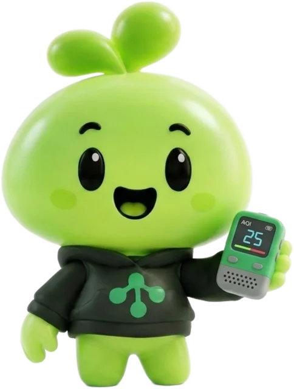
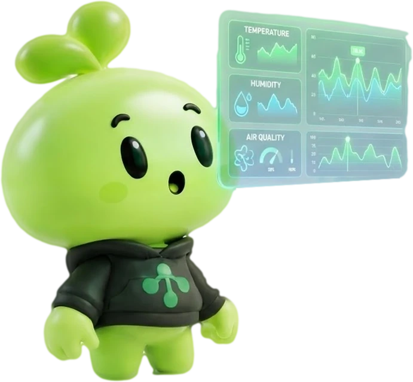
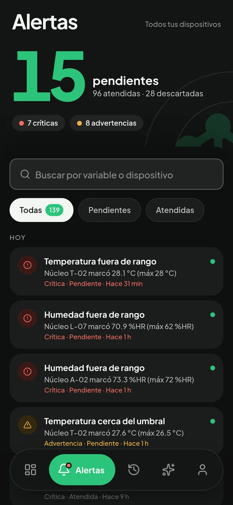
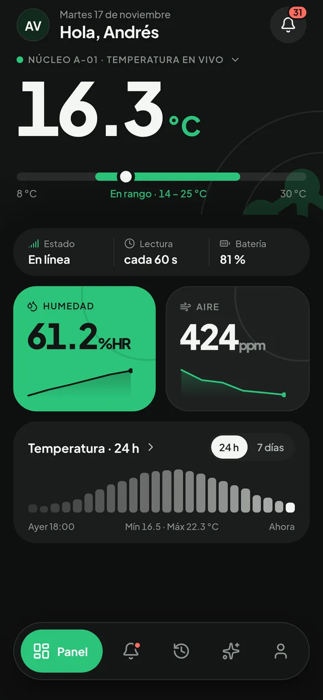
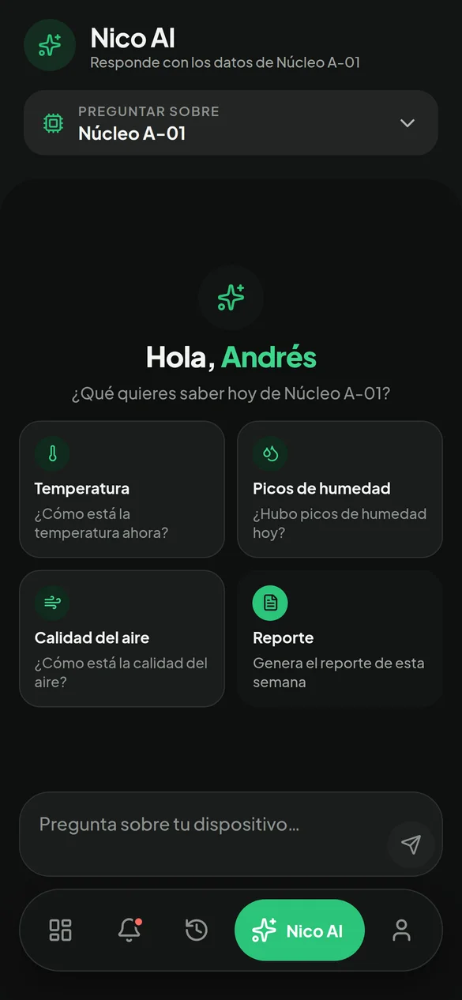
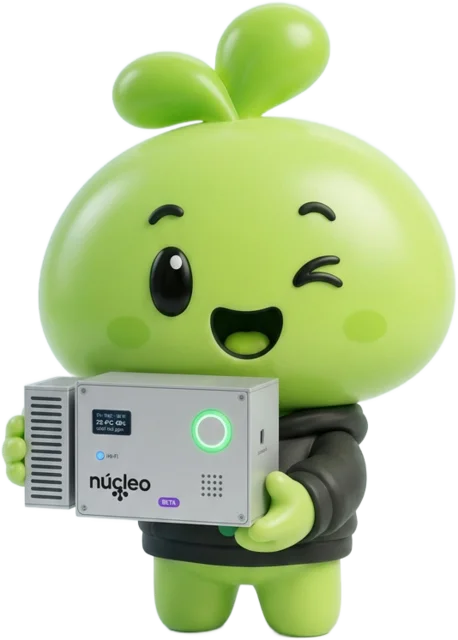
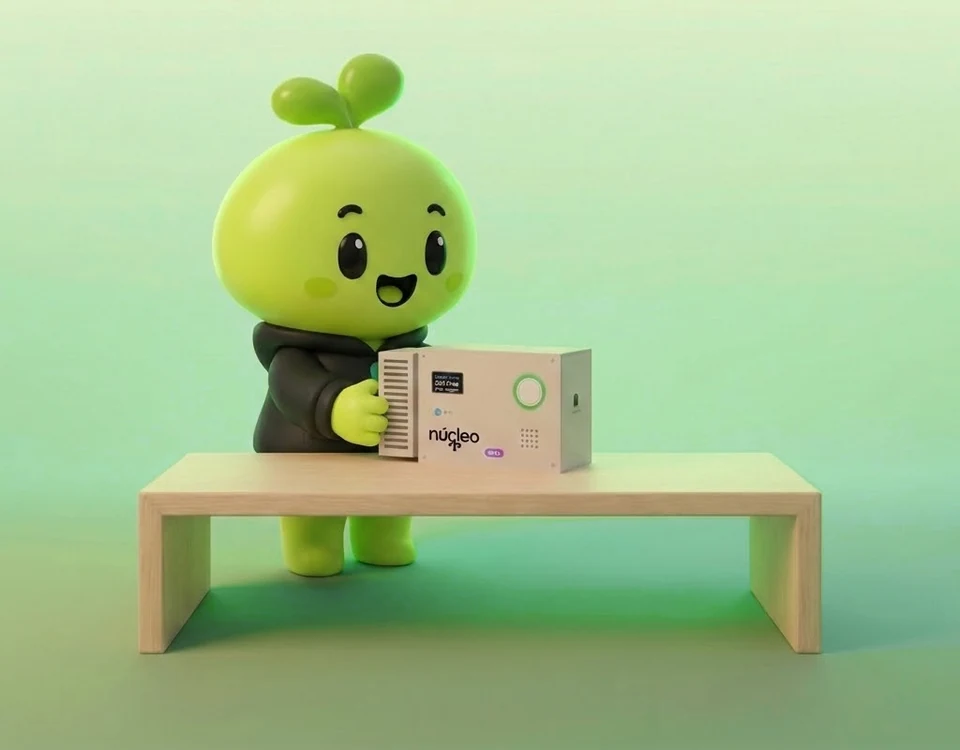
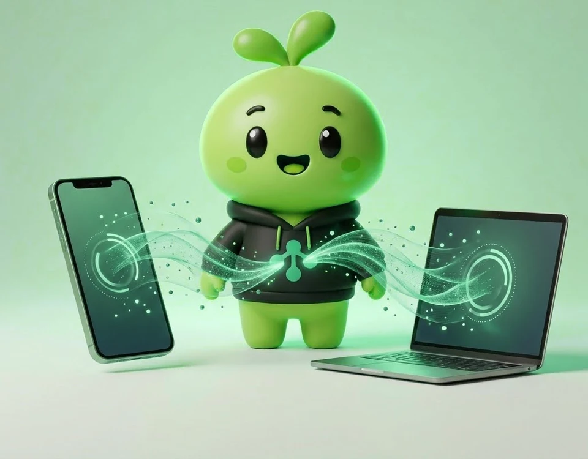
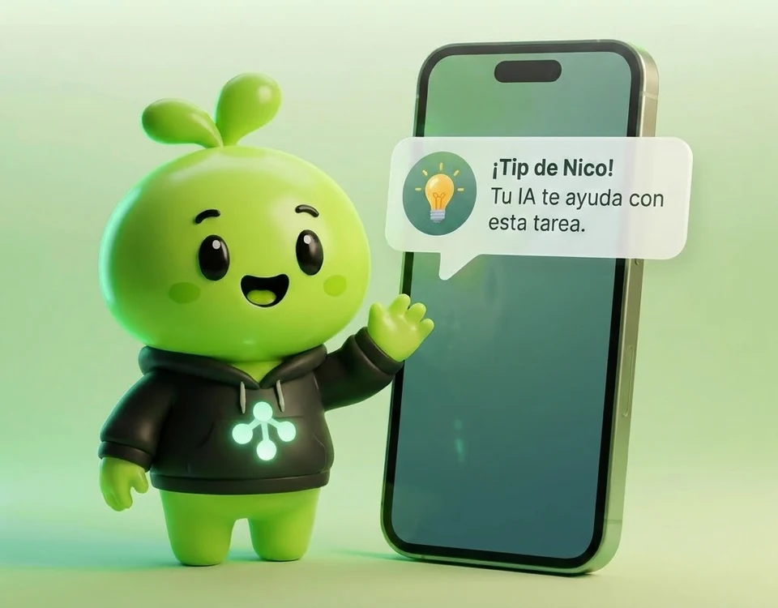
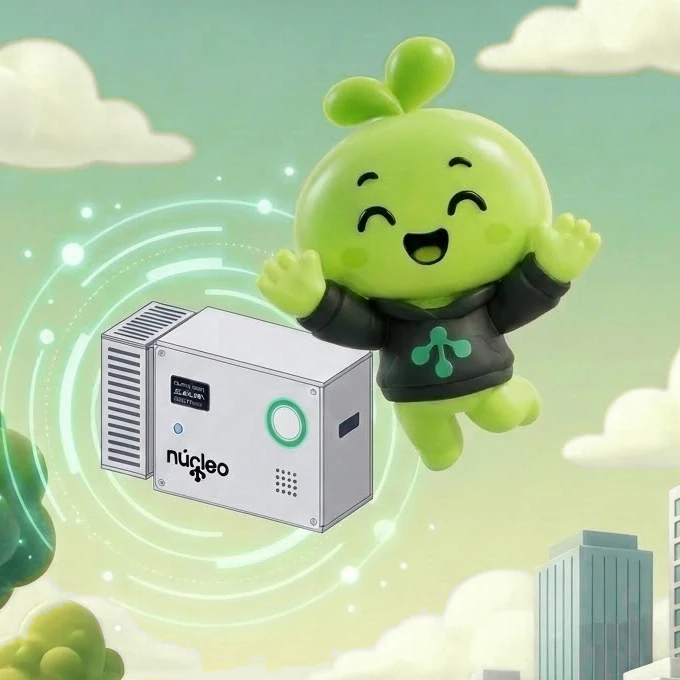

Tus espacios, explicados.
Núcleo mide la temperatura, la humedad y la calidad del aire. Nico te avisa cuando algo se sale de rango y te lo explica en palabras simples.
Nico
¡Hola! Soy Nico, el guía de Núcleo.
Conoce a Nico
Un guía que vive dentro de cada Núcleo
Nico es la cara de Núcleo: está en el dispositivo, en la web y en la app, y convierte miles de lecturas en respuestas claras.
Nico
¡Hola! Leo los sensores de tus espacios, vigilo que todo esté en rango y, cuando algo cambia, te lo cuento como un compañero de equipo. A lo largo de esta página yo te explico cada parte. ¿Vamos?
Mide
Temperatura, humedad, eCO₂ y TVOC de cada área.
60 s entre lecturasAvisa
Al correo, al celular y en pantalla, en cuanto algo se sale de rango.
- Normal
- Advertencia
- Peligro
Explica
Respuestas en lenguaje natural, siempre con cifras reales.
¿Cómo está el aire hoy?En buen nivel: 424 ppm.
Cómo funciona
Del sensor a tu pantalla en segundos

NicoEl dispositivo mide, la lectura viaja cifrada, tú la ves en vivo y yo te ayudo a entenderla.
Así trabajo
Del sensor a tu pantalla en segundos.
- El Núcleo mideDHT22 y CCS811
- Viaja cifradoMQTT con TLS
- Lo ves en vivoWeb y app
- Nico lo explicaNico AI
Roles por empresa y área
Administrador, supervisor, analista y operador ven solo lo suyo.
En tiempo real
Lecturas y alertas por WebSocket, sin recargar la página.
Tus datos son tuyos
Exporta histórico y alertas a CSV y reportes a PDF.
Plataforma web
Todo tu monitoreo en un solo tablero

NicoEste es mi tablero. Toca las pestañas: así se ve Núcleo por dentro, con datos de una empresa de prueba.
App móvil
Tus espacios, en el bolsillo
Nico¿Saliste de la oficina? Yo sigo vigilando. Si algo se sale de rango te mando una notificación y desde ahí mismo la atiendes.



Descárgala para Android
APK directo desde nuestro servidor. Android 7 o superior.
Descargar la app
El dispositivo
Núcleo: el sensor que hace todo el trabajo

NicoEste es mi cuerpo. Toca cualquier parte del dibujo y te cuento para qué sirve.

Toca una parte del dispositivo y te digo para qué sirve.
Las cuatro vistas
Toca para ampliarEspecificaciones
- Controlador
- ESP32-S3 · Wi-Fi 2.4 GHz
- Sensores
- DHT22 y CCS811
- Sin conexión
- Guarda y alerta en local
- Conexión
- MQTT con TLS
- Medidas
- 14.4 × 5.5 × 8 cm
Agente de IA
Nico AI responde con tus datos reales
NicoYo consulto las cifras en el sistema y te las explico. Nunca invento un número: si no lo sé, te lo digo.

- ¿Qué dispositivo tuvo más alertas este mes?
- ¿Cómo estuvo el aire ayer en el laboratorio?
- Genera el reporte de esta semana
Funciones
Hecho para equipos que no pueden fallar
Cada lectura fuera de rango se vuelve una alerta con dueño, seguimiento y evidencia.
Alertas con seguimiento
Detectada, notificada, atendida o descartada con nota. Llega por correo, push y en pantalla.
Umbrales por equipo
Rango normal y de advertencia por variable.
Reportes PDF
Programados por día, semana o mes, al correo.
Seguridad
Segundo factor, sesiones por equipo y auditoría.
Integraciones
API con tokens y webhooks.
Cómo empezar
Intégrate a Núcleo en tres pasos
Sin instaladores ni cableado: en unos minutos tu primer espacio ya está midiendo.
-

1Coloca tu dispositivo
Ponlo en el área que quieres vigilar, conéctalo por USB-C y únelo a tu Wi-Fi. Regístralo en la plataforma con el código de su pantalla.
NicoLejos del sol directo y de las salidas de aire, porfa.
-

2Recibe los datos
Cada minuto llegan temperatura, humedad y aire a la web y a la app. Ajusta umbrales y elige quién recibe cada alerta.
NicoSi algo se sale de rango, te aviso al momento.
-

3Actúa con Nico AI
Atiende alertas, pide resúmenes o reportes y decide con las cifras reales de tus espacios.
NicoPregúntame como se lo dirías a un compañero.
Planes
Elige el plan para tu operación
MXN por Núcleo
Pago único por equipo, aparte del plan. Incluye ESP32-S3, sensores DHT22 y CCS811, pantalla, anillo de luz, zumbador, batería y carcasa.
NicoLos planes son del servicio y no incluyen el dispositivo Núcleo: cambian por cuántos Núcleos puedes dar de alta, cuánto guardas y cuántas preguntas me haces.
Precios en pesos mexicanos, más IVA. El dispositivo Núcleo se adquiere aparte ( por equipo, pago único) o en comodato desde el plan Bosque.
Compara
Todo lo que incluye cada plan
NicoSon los mismos límites de las tarjetas, lado a lado. Si tu operación es más grande, mira el plan Empresa.
Empresa
Más de 25 dispositivos o varias plantas
Límites, retención y acompañamiento a la medida de tu operación.
- Núcleos ilimitados
- Almacenamiento a medida
- Límites de Nico AI acordados
- Acompañamiento en la instalación
NicoEstas son las preguntas que más me hacen.
Preguntas frecuentes
Lo que más me preguntan
¿Qué pasa si se va el internet?
El Núcleo sigue midiendo, guarda las lecturas con su hora y las envía al volver la conexión. Mientras tanto, la luz y el zumbador avisan en el lugar con el último umbral que recibió.
¿Qué cuenta como una petición a Nico AI?
Cada pregunta que me haces en el chat de la web o la app. Si llegas al límite del día o de la hora, sigues viendo todo el panel; solo esperas a que se renueve.
¿Qué ocupa el almacenamiento?
Las lecturas de tus dispositivos, los reportes PDF y los archivos que adjuntas. Una lectura por minuto por equipo ocupa alrededor de 0.5 GB al año.
¿Necesito instalar algo?
La plataforma funciona en el navegador. La app de Android se descarga desde app.bynucleo.com. El Núcleo solo necesita Wi-Fi de 2.4 GHz y corriente por USB-C.
¿Quién puede ver mis datos?
Solo las personas de tu empresa, según su rol y área. La comunicación va cifrada y la IA corre en nuestro propio servidor.
¿Puedo cambiar de plan?
Sí, cuando quieras. Al subir de plan los nuevos límites aplican al momento; al bajar, desde el siguiente periodo.
¿Listo para que Nico cuide tus espacios?
Escríbenos y te ayudamos a conectar tu primer Núcleo. Si ya tienes cuenta, entra a la plataforma.
